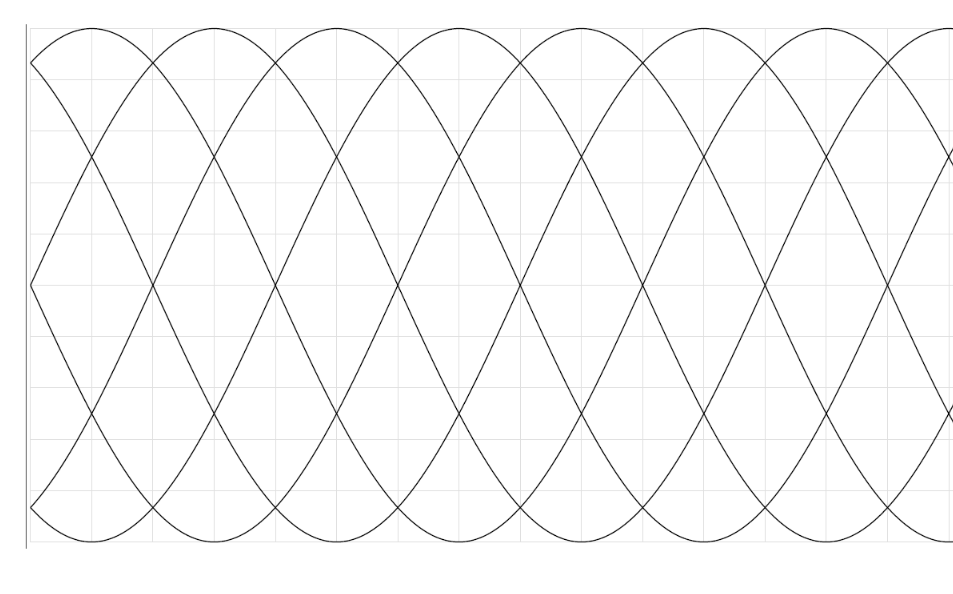
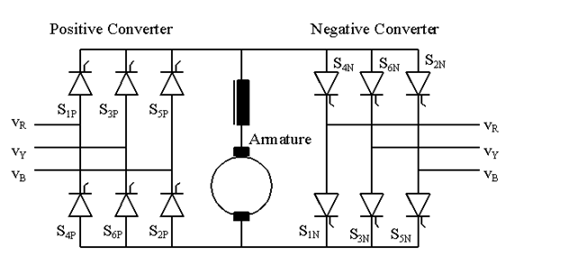

class: center, middle # EE-463 STATIC POWER CONVERSION-I # 3-Phase Controlled Rectifiers ## Ozan Keysan ## [keysan.me](http://keysan.me) ### Office: C-113 <span class="meta">•</span> Tel: 210 7586 --- # Review ## N-Phase Half Wave Rectifier <img src="./images/ee463/n_phase_half_bridge.png" alt="Drawing" style="width: 600px;"/> --- # Review ## 3-Phase Half Wave Diode Rectifier <img src="./images/ee463/3ph_half_bridge_voltage.png" alt="Drawing" style="width: 600px;"/> --- # Review ## 3-Phase Half Wave Diode Rectifier Average Voltage? -- ## \\(V\_{dc}= \dfrac{3\sqrt{6}}{2 \pi} V\_{ph,rms}\\) ###or ## \\(V\_{dc}= \dfrac{3\sqrt{2}}{2 \pi} V\_{ll,rms}\\) --- # Half-bridge Thyristor Rectifier <img src="http://www.nainasemi.com/img/power-modules4.jpg" alt="Drawing" style="width: 700px;"/> --- # Half-bridge Thyristor Rectifier <img src="http://lh3.ggpht.com/-kPBowC5Q8oE/Tf_VIqQNDLI/AAAAAAAABdE/8o6SQlRpiCc/10_thumb2.jpg?imgmax=800" alt="Drawing" style="width: 600px;"/> --- # Half-bridge Thyristor Rectifier ## Average Voltage? -- ## \\(V\_{dc(\alpha)}= \dfrac{3\sqrt{6}}{2 \pi} V\_{ph,rms} cos (\alpha)\\) ###or ## \\(V\_{dc(\alpha)}= \dfrac{3\sqrt{2}}{2 \pi} V\_{ll,rms} cos (\alpha)\\) --- # Full-bridge Thyristor Rectifier <img src="./images/ee463/3ph_thyristor.png" alt="Drawing" style="width: 600px;"/> --- # Full-bridge Thyristor Rectifier <img src="./images/ee462/3ph_thyristor_rectifier_simplified.png" alt="Drawing" style="width: 500px;"/> --- ## Diode Rectifier (or \\(\alpha=0\\)) <img src="https://upload.wikimedia.org/wikipedia/commons/2/2e/3_phase_rectification_2.svg" alt="Drawing" style="width: 350px;"/> --- # Full-bridge Thyristor Rectifier ### Remember output voltage follows line to line voltages! <img src="https://www.electronics-tutorials.ws/wp-content/uploads/2018/09/power98.gif" alt="Drawing" style="width: 500px;"/> --- # Full-bridge Thyristor Rectifier ### Remember output voltage follows line to line voltages! <img src="https://upload.wikimedia.org/wikipedia/commons/9/91/Bridge_rectifier_at_alpha%3D0_u%3D0.png" alt="Drawing" style="width: 650px;"/> --- # Full-bridge Thyristor Rectifier ## Non-zero firing angle --  --- # Full-bridge Thyristor Rectifier ## Non-zero firing angle -- <img src="./images/ee463/3ph_thyristor_nonzero2.png" alt="Drawing" style="width: 800px;"/> --- # Output Voltage vs. Firing Angle -- <img src="./images/ee462/3phase_thyristor_0.png" alt="Drawing" style="width: 800px;"/> --- # Output Voltage vs. Firing Angle <img src="./images/ee462/3phase_thyristor_30.png" alt="Drawing" style="width: 800px;"/> --- # Output Voltage vs. Firing Angle <img src="./images/ee462/3phase_thyristor_60.png" alt="Drawing" style="width: 800px;"/> --- # Output Voltage vs. Firing Angle <img src="./images/ee462/3phase_thyristor_90.png" alt="Drawing" style="width: 800px;"/> --- # Output Voltage vs. Firing Angle <img src="./images/ee462/3phase_thyristor_120.png" alt="Drawing" style="width: 800px;"/> --- # Output Voltage vs. Firing Angle <img src="./images/ee462/3phase_thyristor_150.png" alt="Drawing" style="width: 800px;"/> --- # Output Voltage vs. Firing Angle <img src="./images/ee462/3phase_thyristor_180.png" alt="Drawing" style="width: 800px;"/> --- # Full-bridge Thyristor Rectifier ## Average output voltage? <img src="./images/ee463/3ph_thyristor_nonzero2.png" alt="Drawing" style="width: 800px;"/> -- ### \\(V\_{d(\alpha)}= \dfrac{3\sqrt{2}}{\pi} V\_{ll,rms} cos (\alpha)\\) --- # Full-bridge Thyristor Rectifier ## What about the current? -- <img src="./images/ee463/3ph_thyristor_current.png" alt="Drawing" style="width: 800px;"/> --- ## Current Waveform: No triple harmonics #### Comparison: <a href="https://www.google.com.tr/?gfe_rd=cr&ei=XqrmWLLjEc-z8weYuJvgDA&gws_rd=ssl#q=sin(x)%2Bsin(3x)/3%2Bsin(5x)/5%2Bsin(7x)/7%2Bsin(9x)/9%2Bsin(11x)/11%2Bsin(13x)/13%2Bsin(15x)/15%2Bsin(17x)/17">Single Phase</a>, <a href="https://www.google.com.tr/?gfe_rd=cr&ei=warmWK-gCM-z8weYuJvgDA&gws_rd=ssl#q=sin(x)-sin(5x)/5-sin(7x)/7%2Bsin(11x)/11%2Bsin(13x)/13-sin(17x)/17-sin(19x)/19">Three Phase</a> -- <img src="./images/ee463/3ph_tyhristor_current.png" alt="Drawing" style="width: 600px;"/> --- ## Current Waveform: <img src="./images/ee463/thyristor_power_factor.png" alt="Drawing" style="width: 600px;"/> --- # Full-bridge Thyristor Rectifier ## Current Waveform: -- ## Fundamental RMS: \\(I_{s1}=\frac{\sqrt{6}}{\pi}= 0.78 I_d\\) -- ## Total RMS: \\(I_{s}=\sqrt{\frac{2}{3}} I_d = 0.816 I_d\\) -- ## THD= 31.08 % --- # Effect of Ls (Commutation) -- <img src="./images/ee463/3ph_thyristor_line_inductance.png" alt="Drawing" style="width: 600px;"/> --- # Effect of Ls (Commutation) --- # Commutation: \\(\alpha =0 \\), \\(L\_s =0 \\) <img src="https://upload.wikimedia.org/wikipedia/commons/9/91/Bridge_rectifier_at_alpha%3D0_u%3D0.png" style="width: 700px;"/> --- # Commutation: \\(\alpha =0 \\), \\(L\_s > 0 \\) <img src="https://upload.wikimedia.org/wikipedia/commons/1/18/Bridge_rectifier_at_alpha%3D0_u%3D20.png" style="width: 700px;"/> --- # Commutation: \\(\alpha =20 \\), \\(L\_s > 0 \\) <img src="https://upload.wikimedia.org/wikipedia/commons/7/7c/Bridge_rectifier_at_alpha%3D20_u%3D20.png" style="width: 700px;"/> --- # Commutation: \\(\alpha =40 \\), \\(L\_s > 0 \\) <img src="https://upload.wikimedia.org/wikipedia/commons/6/6d/Bridge_rectifier_at_alpha%3D40_u%3D20.png" alt="Drawing" style="width: 700px;"/> --- # Effect of Ls (Commutation) <img src="./images/ee463/3ph_thyristor_commutation.png" alt="Drawing" style="width: 800px;"/> --- # Effect of Ls (Commutation) -- ### \\(A_u = \omega Ls Id\\) (repeats itself every \\(\pi/3\\)) -- ### \\(V\_{d(\alpha)}= \dfrac{3\sqrt{2}}{\pi} V\_{ll,rms} cos (\alpha) - \dfrac{ 3 \omega Ls Id}{\pi}\\) --- # Effect of Ls (Commutation) -- ### Introduces a voltage drop on the rectified side - ### Single Phase: \\(\dfrac{2\omega L_s}{\pi}I_a\\) -- - ### Three Phase: \\(\dfrac{3\omega L_s}{\pi}I_a\\) -- - ### Resultant voltage in a 3-ph rectifier: ### \\(V\_{d\alpha}= \dfrac{3\sqrt{2}}{\pi}V\_{l-l} cos (\alpha) - \dfrac{3\omega L_s}{\pi}I_a \\) --- # Inverter Mode of Operation ## Two Quadrant Operation -- <img src="./images/ee463/3ph_thyristor_two_quadrant.png" alt="Drawing" style="width: 400px;"/> ### Two quadrant operation with source side voltage (i.e. DC motor) --- ## How can you obtain four-quadrant operation? -- ## Use two separate converters <img src="http://keysan.me/presentations/images/ee462/3ph_thyristor_motor_drive_regenerative.png" alt="Drawing" style="width: 500px;"/> ### Ref: Mohan Chapter 13 DC Motor Drives --- ## How can you obtain four-quadrant operation? ## Use two separate converters  ### Ref: Mohan Chapter 13 DC Motor Drives --- ## You can download this presentation from: [keysan.me/ee463](http://keysan.me/ee463)